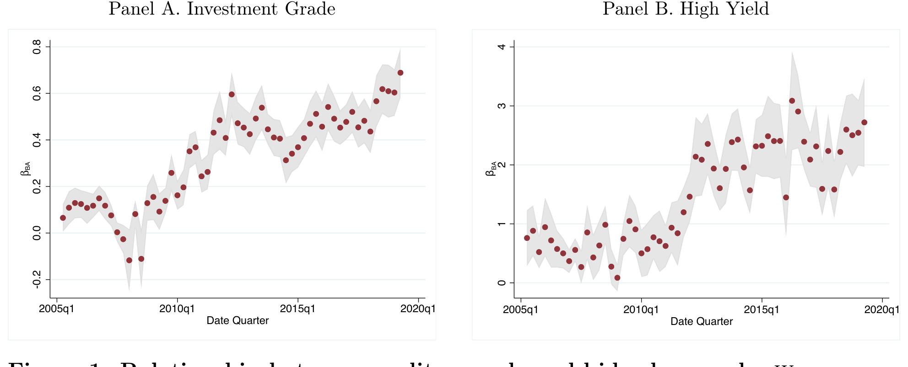
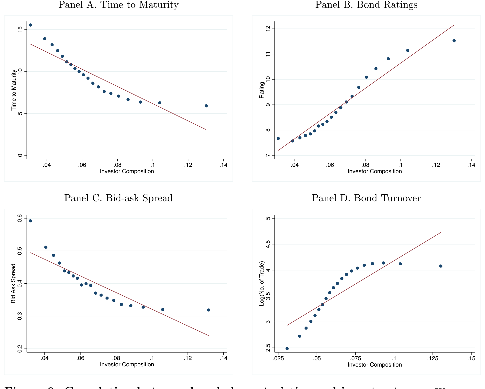
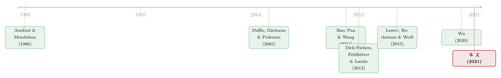

一个买卖价差，为什么越来越贵了？——把信用利差的「流动性那一块」拆给你看
本文读的是 Li & Yu (2021, 即将刊于 Journal of Finance)：过去十五年里，美国公司债的信用利差对买卖价差的「载荷」翻了一倍多——同样 100 个基点的买卖价差，2005 年只对应 54bp 的信用利差，到 2019 年却对应 120bp。作者把这个变化归因于投资者结构的迁移：以共同基金、ETF 为代表的短期投资者份额从不到 8% 升到约 20%，他们交易得更频繁，把二级市场的摩擦更猛烈地写进了价格。一个带有异质投资者与异质债券的定向搜寻模型，能在数量上复现这个总量趋势。
1 引言：一个「看上去在变好」的市场
先说一件让人有点别扭的事。
2020 年 3 月，美国公司债市场几乎「断电」——成交成本骤升、价格脱锚，直到美联储下场才平息（关于那一幕的微观解剖，可参见《差点死掉的那个市场》）。事后人们想复盘：这个市场是不是早就比十年前更脆弱了？可奇怪的是，如果你去翻那之前的标准流动性指标——买卖价差 (bid-ask spread)、零成交天数、换手率——它们大多在说「流动性在缓慢变好」。
于是矛盾摆在桌面上：指标说在变好，危机却说更脆弱。 到底哪里出了问题？
本文给的答案，妙就妙在它换了一个看问题的角度。绝大多数文献盯着流动性的水平（level）——价差是高是低；而 Li 和 Yu 盯的是另一样东西：信用利差对买卖价差的斜率（loading）。换句话说，他们问的不是「价差有多大」，而是「价差每动一点，信用利差会跟着动多少」。
这个斜率，过去十五年里悄悄地、却显著地变陡了。
2 一个被忽略的「斜率」
作者的出发点是一个再朴素不过的横截面回归：把每只债券在每个季度的信用利差，回归到它的买卖价差上，并控制住债券与公司层面的特征。逐季度地跑这条回归，看那个斜率系数 \(\beta_t\) 怎么随时间走。基准方程就是论文的 (1) 式：
结果很干净。在 2008 年全球金融危机 (global financial crisis, GFC) 之前，买卖价差每相差 100bp，信用利差大约相差 54bp；可到了 2019 年，同样 100bp 的买卖价差差异，对应的信用利差差异已经扩大到 120bp。斜率翻了一倍多，而且投资级 (investment-grade) 和高收益 (high-yield) 两段都成立。
如图 1 所示，这条 \(\beta_t\) 曲线连同它的 95% 置信带，是一条肉眼可见的上行轨迹。

Figure 1: Relationship between credit spreads and bid-ask spreads. We regress
接着，一个自然的问题是：斜率变陡，意味着什么？沿用文献的定义，把一只债券的流动性成分 (liquidity component) 记为「载荷 × 它自己的买卖价差」。既然载荷在涨，哪怕价差本身没怎么变，流动性成分占信用利差的比重也会被顶上去。事实正是如此——流动性成分的中位数，从危机前占信用利差的约 10%，一路升到 2019 年的约 30%。
这就把开头的矛盾解开了一半：价差的「水平」在改善，价差对价格的「定价权」却在增强。 公司的融资成本，正变得对二级市场的摩擦越来越敏感。可这背后的推手是谁？
3 谁在频繁交易：投资者结构这条暗线
真正关键的一步，是作者把镜头从「价格」转向「持有人」。
美国公司债市场的投资者结构，自 2000 年代初就在剧烈迁移：共同基金与 ETF 的份额，从早期不到 8% 涨到今天的约 20%（见论文附录 Figure A.1）。这群人和保险公司、养老金有一个根本区别——他们是（相对意义上的）短期投资者 (short-term investors)：共同基金要应付申购赎回，ETF 要靠授权参与人 (authorized participants, APs) 的套利在底层资产上反复交易。无论哪一种，落到公司债身上，都是更高的交易频率。
那么，频繁交易会怎样？直觉是这样的：一只债券被交易得越勤，单位时间里被「磨」掉的交易摩擦就越多；如果买卖价差恰好刻画了这种摩擦，那么这只债券的信用利差，自然就对买卖价差更敏感。短期投资者越多 → 交易越频繁 → 斜率越陡。
为验证这条链，作者动用了美国的季度持有人数据（Thomson Reuters 的 Lipper eMaxx，覆盖样本期内债券存量的 40%–50%）。他们用「过去四个季度持仓净变动的滞后均值」度量每个投资者的换手，再按持仓加权聚合到债券层面，得到一个投资者结构指标。结论与直觉一致：短期投资者偏好更短期限、更高风险的债券；而由短期投资者持有的债券，成交笔数更多、换手率更高。样本期内，债券成交笔数的中位数上升了超过 60%。
如图 3 所示，债券特征与投资者类型之间存在清晰的相关结构——这正是后文模型里「分选」(sorting) 的实证影子。

Figure 3: Correlation between bond characteristics and investor types
到这里，故事讲通了大半。但一个聪明的读者立刻会皱眉：投资者结构和债券特征是互相挑选的——短期投资者本就爱买容易交易的债，这到底是「短期投资者推高了交易」，还是「好交易的债吸引了短期投资者」？相关不等于因果。
4 十年期那道「断点」
于是反转出现在识别上。作者借了 Bai, Li 和 Manela (2022) 发现的一个制度性「断点」：10 年期剩余期限。
为什么是 10 年？因为公司债共同基金里规模最大的一类是中期债基 (intermediate-term bond funds)，而它们的投资授权大多被限制在「5 到 10 年期」。这意味着：当一只债券随着账龄增长、剩余期限跨过 10 年这条线时，它会突然对一大批短期投资者「失格」；反过来，剩余期限刚好落到 10 年以下的债券，会骤然进入这群短期投资者的可买清单。
这就构成了一个近似断点回归 (regression discontinuity, RDD) 的设计——10 年这条线两侧的债券，基本面几乎连续，唯独投资者结构发生跳变。作者发现：剩余期限略低于 10 年的债券，其投资者群体明显更「短期」；而且，正是这批债券，信用利差对买卖价差的载荷显著更大。
这一步很重要。它把第 3 节那条「相关」的链条，钉成了一个更可信的「因果」方向：是投资者结构在驱动「信用价格—二级市场摩擦」之间的关系，而非反过来。 而且无论换用文献里哪一种流动性度量——Roll 测度、Amihud 测度、imputed round-trip cost，还是按 Dick-Nielsen, Feldhütter 和 Lando (2012) 的方法把多个价量指标合成的综合流动性因子——时序与横截面的结论都稳健（关于公司债流动性该怎么量得更干净，可参见《把「成交价」从「成交量」里解放出来》）。
5 模型：当利率走低，谁挤进了不流动的市场
reduced-form 证据指了方向，但要回答「投资者结构的变化，在数量上能解释多少总量趋势」，就得有一个结构模型。这是全文最见功力的一节。
设定。 模型有两侧异质性。投资者一侧，按遭遇流动性冲击的频率区分——这个频率来自他们各自的负债结构：保险公司可能要为既有保单兑付，共同基金可能要应对突如其来的申赎。债券一侧，按剩余期限与违约强度区分。每只债券有自己独立的「子市场」(submarket)，各有不同的流动性条件与价格。
机制（定向搜寻）。 每期都有一批新投资者作为潜在买家进入经济。他们观察所有子市场的「菜单」，决定进入哪一个，并在其中搜寻卖家；一旦匹配成功，交易达成，其中一部分剩余被背景里的交易商以买卖价差的形式抽走（这个价差形式可按 Lester, Rocheteau 和 Weill (2015) 的设定做微观基础，所以作者不必显式建模交易商）。持有债券者会以各自不同的频率遭遇流动性冲击；冲击一来，他就变成卖家、开始找买家，卖掉后离场。
均衡。 均衡呈现一个门槛策略 (cutoff strategy)：流动性冲击频率低于某个阈值的投资者才参与债市，更「短命」的人则去持有流动的无风险资产。更妙的是分选——短期投资者归到「短期限、高违约强度」的子市场，长期投资者归到「长期限、低违约强度」的子市场，与数据里的相关结构对得上。
核心比较静态。 当无风险利率下行，会发生什么？更多短期投资者为了追逐收益 (reach for yield)，挤进原本不流动的债券市场，于是每个子市场的成交笔数上升、卖买比 (seller-buyer ratio) 改变。（利率长期走低如何系统性地催肥这类「短钱」，可参见《利率长跌二十年，如何亲手喂大了影子银行》。）
最关键的拆解。 作者用模型把那个载荷系数拆成两块：
$$\beta \;=\; \beta^{\text{direct}} \;+\; \beta^{\text{indirect}}$$
- \(\beta^{\text{direct}}\) 是直接成分：买卖价差外生地变动，直接推高信用利差——这是教科书式的交易成本渠道。
- \(\beta^{\text{indirect}}\) 是间接成分：在横截面里，买卖价差本身是内生的，它和卖买比正相关，而更高的卖买比意味着更长的成交延迟，延迟又通过另一条路抬高信用利差。
这正是本文与经典的 Amihud 和 Mendelson (1986) 分道扬镳之处：在后者那里，买卖价差是外生固定的，投资者只是按价差去挑子市场；而在这里，投资者沿着「期限、违约率」这些与二级市场外生的特征分选，价差是被这种分选内生决定的。
短期投资者一多，两块都涨：交易更频繁，价格对交易成本（直接）和成交延迟（间接）都更敏感。而校准的结论是——间接成分的上升不仅在数量上举足轻重，更是解释整个观测到的变化的关键。作者只把 2005 与 2019 两个稳态分别求解，唯一的核心差别就是「2019 年短期投资者参与度更高」，并让参数去匹配两年的平均换手率、载荷系数、信用利差对买卖价差的方差比、平均信用利差与平均买卖价差。结果，这一个机制就能复现 2005 到 2019 间载荷的大幅抬升。
论文最后还做了一个有意思的延伸：短期投资者既是「更勤的交易者」，也是市场的「流动性提供者」。把投资者结构变化和交易商监管变化（如 Volcker 规则）放在一起看，净效应是——它放大了监管变化对短期债券的影响，却缓和了对长期债券的影响。
6 文献脉络
把这篇论文放回它的谱系里，线索其实相当清楚。
最早，是 Amihud 和 Mendelson (1986) 把「交易成本如何影响资产价格」写成了一个投资者按持有期限分选的理论——但他们把交易成本当作外生给定。接着，搜寻摩擦被请进了场外市场 (OTC)：Duffie, Gârleanu 和 Pedersen (2005) 的随机搜寻框架，成了之后所有 OTC 流动性研究的母板；Lester, Rocheteau 和 Weill (2015) 则在定向搜寻里显式地放进交易商，正是本文「价差 = 一部分交易剩余」的微观基础。与此同时，实证一侧在反复确认一件事：流动性能解释信用利差里相当大的共同成分——Bao, Pan 和 Wang (2011) 把这一点量化得最有名，而 Dick-Nielsen, Feldhütter 和 Lando (2012) 给出了一套被广泛沿用的流动性度量。

然后，问题转向了「危机后流动性到底有没有恶化」，证据莫衷一是。但真正关键的一步，是 Li 和 Yu 没有去争论流动性的水平，而是盯住了那个被忽略的斜率，并把它和投资者结构的迁移、再和一个能内生化分选的两侧异质性搜寻模型缝在了一起。值得一提的是同期的 Wu (2020) 发现了相似的趋势，却把成因归给交易商监管；本文则用观测到的投资者结构变化给出了另一套解释——两者对「投资级载荷上升」的事实一致，但本文进一步说明它确实转化成了流动性成分的上升。
7 评论与延伸（Q&A + 研究方向）
(a) 几个可能的疑问
Q：载荷上升，会不会只是因为「价差」这个指标本身在变质，而非投资者在变？
有这个担心，但作者用了三道防线：一是控制住大量债券与公司特征（含评级、行业 FE）；二是把基准价差换成 Dick-Nielsen, Feldhütter 和 Lando (2012) 的综合流动性因子，结论不变；三是用 10 年期断点把「投资者结构」单独拎出来识别。三道都指向同一个方向，单纯的度量漂移很难同时骗过它们。
Q：这篇和「流动性的水平」那一支文献，到底差在哪？
差在问的对象。那一支问「价差是高是低」，本文问「价差对价格的定价权有多强」。这也解释了开头的悖论：水平可以改善，斜率却同时变陡——前者说市场更好做了，后者说一旦摩擦来袭，价格会被推得更远。
Q：10 年期断点真的「干净」吗？会不会有别的东西也在 10 年处跳变？
这是最该追问的地方。断点的合法性，全押在「中期债基的 5–10 年授权」这条制度事实上。只要没有别的、同样在 10 年处突变的因素（比如指数纳入规则、税收处理）与之共谋，识别就成立。作者把它当作辅助证据而非唯一支柱，与时序、横截面互相印证，这种「多证据交叉」比单押一个断点稳妥。
Q：为什么是「间接成分」而不是「直接成分」最重要？这有点反直觉。
因为直接成分只是「价差涨一点、利差涨一点」的机械传导；而间接成分抓住的是均衡内生性——短期投资者多了，卖买比升高、成交延迟变长，价差与延迟一起被顶上去，这部分对载荷的贡献在校准里既大又关键。它提醒我们：把价差当外生变量的传统做法，会系统性地低估短期投资者的影响。
Q：ETF 和共同基金，在模型里是一回事吗？
在本文的抽象层面是。两者都通过不同渠道（基金的申赎、ETF 的 AP 套利）抬高了底层债券的交易需求，因而都被归为「短期流动性交易者」。论文主要拿共同基金举例，但明确说 ETF 扮演类似角色。当然，正常时期 ETF 也可能提升底层流动性，这层细微差别本文未深究。
Q：这对 2020 年 3 月那场危机有什么含义？
直接含义是：当短期投资者占比更高、载荷更陡时，公司融资成本对二级市场摩擦的敏感度也更高，市场因此更容易在冲击下被放大。这与「基金的流动性转换会给债市注入脆弱性」那一支文献是呼应的（参见《基金越难脱手，它手里的债券越「抖」》）。
(b) 几个可能的研究问题与提案
1. 外资持有人是不是「另一种短期投资者」？
【经济故事】eMaxx 自承缺失的主要是外资账户与银行。外资在美国公司债里的份额这些年同样在升，而外资的交易动机（汇率对冲到期、母国流动性冲击）可能让他们的「有效持有期限」与本土基金截然不同。把外资单列进投资者结构，载荷会被推高还是压低？ 【可行性】中。需要把 TIC、Flow of Funds 与 CUSIP 级持有人数据拼起来补上 eMaxx 的盲区；识别可借用本文同款的 10 年断点，或汇率对冲成本的外生变动。数据拼接是主要难点。
2. 把「直接/间接」分解搬到危机窗口去。
【经济故事】本文比的是 2005 与 2019 两个稳态。但间接成分（成交延迟）理应在压力期非线性爆发——2020 年 3 月正是天然实验。能否用同一框架，把危机期载荷的飙升拆成「价差直接渠道」与「延迟内生渠道」，看哪一块主导了那次脱锚？ 【可行性】高。日频甚至 intraday 的 TRACE 数据现成，持有人结构按危机前一个季度固定即可；难点在于把稳态校准的模型扩展到瞬态。
3. 央行下场，改变的是水平还是斜率？
【经济故事】2020 年美联储的 SMCCF（公司债购买）平息了价差水平，但它有没有改变载荷这个「斜率」？如果央行实际上是在替短期投资者承接卖压、压低卖买比，那它影响的恰恰是本文强调的间接成分。 【可行性】中。可用 SMCCF 的资格名单（评级、期限边界）做断点；难在把「资格」与「投资者结构」这两个断点分离开，避免互相污染。
4. 期限授权变了，载荷会跟着变吗？
【经济故事】本文的断点来自基金的 5–10 年授权这一制度。如果某些基金家族修改了投资授权（放宽或收紧期限带），那相关债券的投资者结构会外生跳变——这是一个比横截面更干净的「事件」。 【可行性】中偏低。需要逐家基金的招募说明书 (prospectus) 文本来定位授权变更的时点，工作量大但 doable；一旦定位成功，识别力很强。
我的判断
这篇论文最漂亮的地方，是它换了一个「矩」(moment)。当所有人都在为「流动性水平到底有没有恶化」吵得不可开交时，它绕到侧面，盯住信用利差对价差的斜率，一下子把一个看似自相矛盾的事实——水平改善、市场却更脆弱——讲圆了。再把这个斜率与投资者结构、与一个能内生化分选的搜寻模型缝在一起，逻辑闭环且有量化支撑，分量很足。
对识别，我最想多看一眼的是 10 年断点的排他性。它承载了从「相关」到「因果」的全部重量，而我们很难完全排除别的制度因素也在 10 年处跳变；作者用多重证据互证缓解了这点，但若能再加一个独立外生冲击（比如上面提的「基金授权变更」事件），结论会更不可撼动。另外，模型只比两个稳态、且把流动性与违约的相互作用抽象掉了——而 He 和 Milbradt 一系的工作提示这两者其实纠缠很深，未来若把违约渠道放回来，间接成分的估计可能还会变。
我最想看到的后续，是把这套「直接/间接」分解推到压力窗口，并接上外资持有人这条暗线——毕竟，决定一张债券价格的，从来不只是它值多少钱，还有此刻谁握在手里、又有多急着脱手（这层意思，《谁在持有这张债券，决定了它的价格》讲得很透）。
参考文献
- Amihud, Y., and H. Mendelson (1986). Asset pricing and the bid-ask spread. Journal of Financial Economics 17(2), 223–249.
- Bao, J., J. Pan, and J. Wang (2011). The illiquidity of corporate bonds. Journal of Finance 66(3), 911–946.
- Dick-Nielsen, J., P. Feldhütter, and D. Lando (2012). Corporate bond liquidity before and after the onset of the subprime crisis. Journal of Financial Economics 103(3), 471–492.
- Duffie, D., N. Gârleanu, and L. H. Pedersen (2005). Over-the-counter markets. Econometrica 73(6), 1815–1847.
- Lester, B., G. Rocheteau, and P.-O. Weill (2015). Competing for order flow in OTC markets. Journal of Money, Credit and Banking 47(S2), 77–126.
- Vayanos, D., and T. Wang (2007). Search and endogenous concentration of liquidity in asset markets. Journal of Economic Theory 136(1), 66–104.
- Bai, J., J. Li, and A. Manela (2022). Working paper.
- Wu, B. (2020). Working paper.